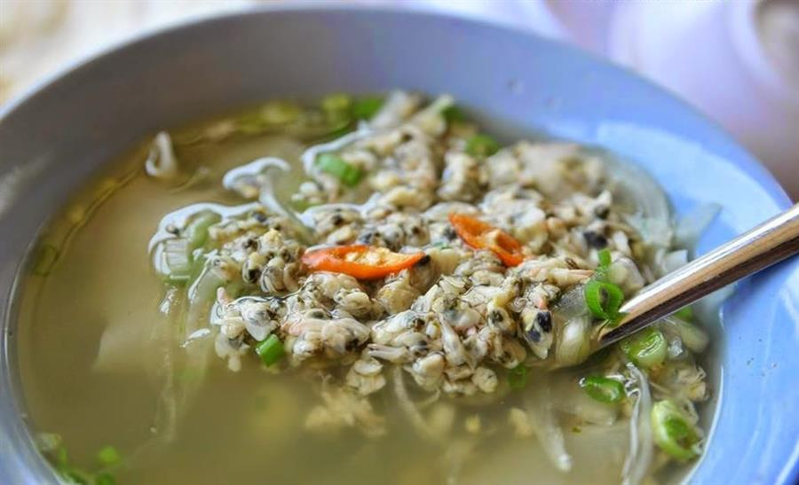
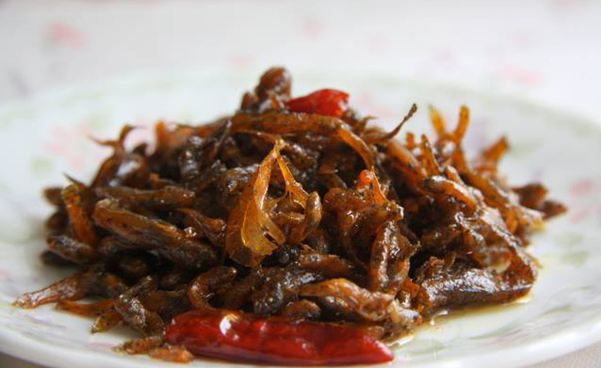
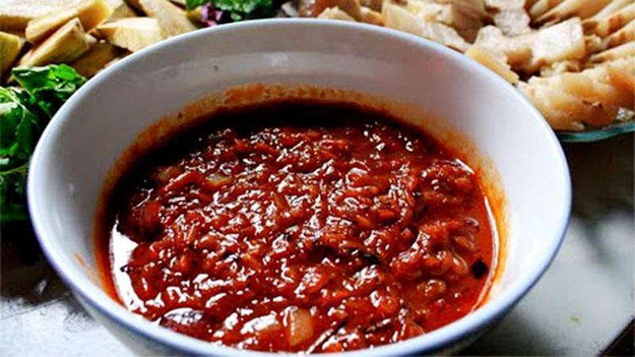
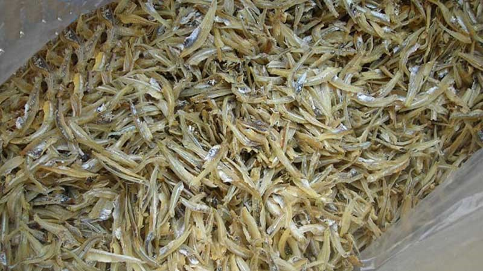
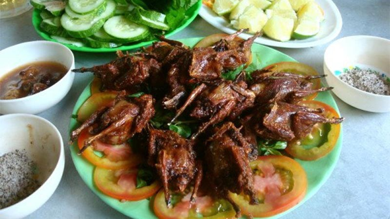
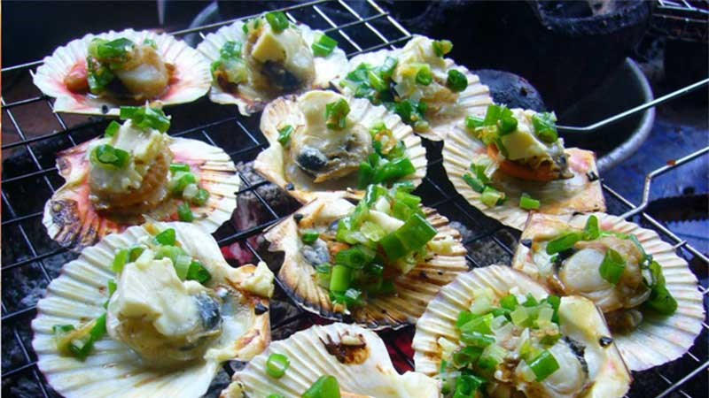
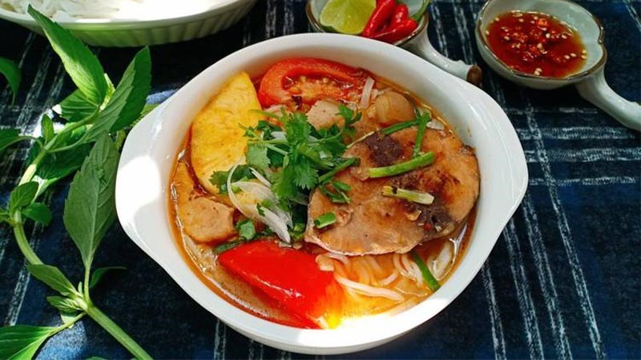
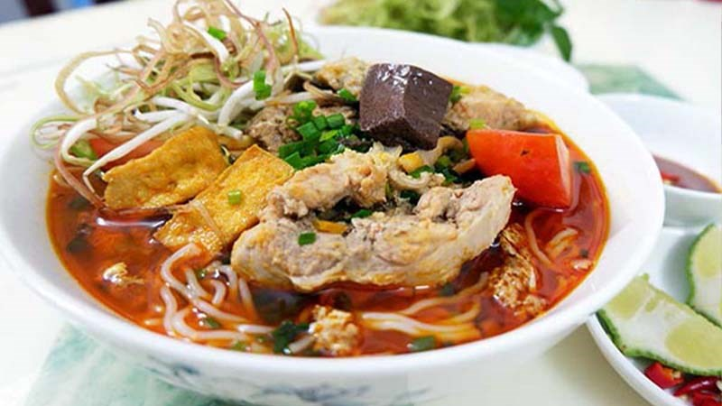
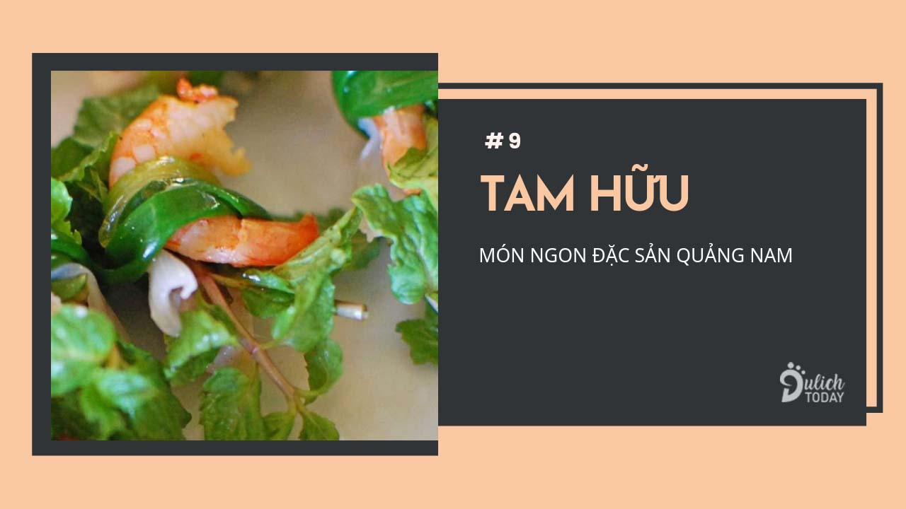
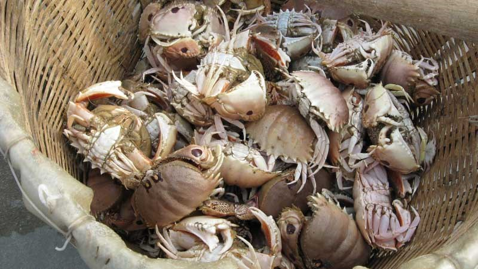

Don là một sinh vật thuộc họ nhà hến và chỉ cư trú tại sông Trà, sông Vệ ở Quảng Ngãi. Chính vì thế mà từ lâu, các món ăn làm từ Don đã trở thành văn hoá ẩm thực của người Quảng Ngãi. Người ta phải ngâm nước hàng giờ để thu hoạch Don. Sau đó đem về rửa sạch và luộc cho đến khi há miệng mở vỏ để lấy được phần nước dùng thanh mát và nguyên chất.
Thịt Don được đem phi cùng với tỏi băm nhuyễn, hành tây và một ít tiêu xay. Sau đó, họ nhúng những miếng bánh tráng nướng vào tô nước dùng rồi thả những chú don ngon nhất vào đó. Tiếp đến, rắc lên thêm hành tây, ớt và tiêu xay là đã hoàn thành bát canh Don ngon đúng điệu.
Món ăn là sự kết hợp giữa nước canh đậm đà, thanh mát, cay the hoà quyện với sự ngọt béo từ thịt Don. Tất cả đã làm nên hương vị độc nhất vô nhị của món ăn này. Chỉ với 15.000 đồng du khách đã có ngay cho mình một bát canh Don nóng hổi.
Nhắc đến những món ăn dân dã, bình dị của Quảng Ngãi, người ta không thể không nghĩ đến món cá bống sông trà kho tiêu. Món ăn đã gắn bó mật thiết với bữa cơm của người dân địa phương từ bao đời nay.
Không quá cầu kỳ nhưng cá bống kho tiêu lại đầy thu hút bởi hương vị thơm ngon. Cá bống sau khi làm sạch được đem kho cùng với một số gia vị như tiêu, ớt, tỏi trong nồi đất. Khi thưởng thức, bạn sẽ cảm nhận được vị ngọt, vị cay cùng vị mặn của thịt cá đọng trên đầu lưỡi. Cá bống sông Trà kho tiêu ngon nhất là khi ăn cùng với cơm trắng.
Đến quảng ngãi mà không thưởng thức mắm Nhum thì quả là một điều đáng tiếc. Đây là loại mắm mà thuở xưa, người Quảng Ngãi dùng để tiến vua.
Nguyên liệu chính là những con Nhum biển bám chặt trên gành đá. Sau khi làm sạch và lấy được phần thịt, người ta đem vào ủ muối theo tỉ lệ trong một cái vại lớn rồi vùi trong bếp tro hoặc phơi ngoài nắng khoảng 20 ngày mới có thể cho ra được một mẻ mắm ngon đúng điệu. Mắm ủ càng lâu càng có vị đậm đà, mùi thơm ngào ngạt. Chỉ với 125.000 đồng du khách đã có ngay cho mình một hũ mắm ngon mang về làm quà.
Cá cơm là một nguyên liệu quen thuộc tại Quảng Ngãi và được chế biến thành nhiều món ăn đa dạng, phong phú. Ngoài làm các món kho, chiên để ăn cùng cơm trắng, cá cơm còn được dùng để làm mắm hoặc chế biến thành gỏi. Dù được chế biến như thế nào thì cá vẫn mang hương vị mằn mặn, thơm ngon. Cá cơm được bày bán tại các cửa hàng, siêu thị ở Quảng Ngãi với giá 300.000/kg.
Chim mía là một món ăn được rất nhiều du khách yêu thích khi ghé đến quảng Ngãi. Những con chim mía được vợt bắt khi thu hoạch vào mùa mía rồi đem chế biến thành các món ăn đa dạng như chiên, hấp, nướng, làm cháo. Món nào cũng ngon và đầy hấp dẫn.
Bạn sẽ không bao giờ quên được hương vị thơm béo từ thịt chim, xương lại rất mềm, mùi hương thơm phức được toả ra từ những xâu chim mía nướng được bày bán dọc các con đường khi ghé đến Quảng Ngãi.
Một trong những món hải sản nổi tiếng nhất ở Quảng Ngãi phải kể đến món sò điệp nướng. Còn gì tuyệt vời hơn khi ngồi hóng mát ở bãi biển đầy nắng và gió, vừa chiêm ngưỡng cảnh sắc thiên nhiên vừa thưởng thức dĩa sò điệp nướng thơm lừng.
Những con sò điệp được tách vỏ, đem nướng trên than hồng, rải thêm một ít mỡ hành, đậu phộng ăn kèm với rau răm và nước mắm chua ngọt. Mùi vị béo ngậy, thơm ngon của thịt sò tan trong miệng chắc chắn sẽ khiến du khách thích thú.
Bún cá ngừ um là một món ăn đòi hỏi sự tỉ mỉ, tận tâm trong lúc chế biến mới có thể cho ra được hương vị bún thơm ngon đúng điệu. Món ăn đã làm say lòng biết bao thực khách bởi sự kết hợp hoàn hảo của các hương vị. Khi thưởng thức, du khách sẽ cảm nhận được một chút vị cay của ớt hoà lẫn với vị thanh của rau và vị béo ngậy của thịt cá ngừ trong tô nước dùng.
Tuy được chế biến kỳ công nhưng giá của món ăn này không hề đắt chút nào. Chỉ với 25.000 đồng bạn đã có thể thưởng thức trọn vẹn hương vị của một tô bún ngon hết sẩy.
Thị trấn sông Vệ (Tư nghĩa) là nơi nổi tiếng làm món bún riêu cua ngon nhất ở Quảng Ngãi. Nơi đây từ lâu đã trở thành điểm dừng chân của nhiều khách thập phương khi muốn thưởng thức một tô bún riêu đậm đà hương vị, được chế biến từ cua đồng.
Tô bún bắt mắt với những cọng bún nhỏ, trắng, phía trên được phủ lên một lớp chả cua, chả trứng đầy ắp, điểm thêm vài cọng hành lá cắt nhỏ. Khi nếm vào, vị ngọt béo đậm đà của nước dùng đọng trên đầu lưỡi. Tất cả đã làm nên hương vị khó quên trong lòng thực khách.
Du khách đến Quảng Ngãi đừng quên ghé qua biển Sa Huỳnh để vừa trải nghiệm thú vui săn cúm núm vừa thưởng thức món ăn ngon từ loại hải sản này. Những con cúm núm còn tươi nguyên được vùi trong đống lửa cho đến khi chín. Thịt cúm núm ngọt, béo thưởng thức cùng với bia rất tuyệt. Đây chắc chắn sẽ là một kỉ niệm khó quên đối với du khách.
Nước chấm tam hữu được pha chế đơn giản từ mắm, tỏi, đường. Chấm ngập cuộn tam hữu vào nước mắm rồi cho cả vào miệng thì mới thưởng thức được chọn vẹn cái hương vị đặc trưng. Vị tam hữu the the do rau trà quế, tôm đất còn vỏ giòn, thịt ba chỉ thơm, ngậy,…thưởng thức tới đâu là thấm thía tới đó.
Địa chỉ:Bạn có biết hóa ra xương rồng cũng có thể chế biến thành món ăn được không? Từng là loại thực phẩm cứu đói của người dân địa phương, món xương rồng Quảng Ngãi nay đã trở thành đặc sản.
Người ta có thể luộc, xào hay thậm chí làm salad với xương rồng. Quan trọng nhất vẫn là chọn những lá non rồi sơ chế sạch sẽ, gọt phần gai bên ngoài cùng lớp màng xanh thì mới bắt đầu chế biến được.
